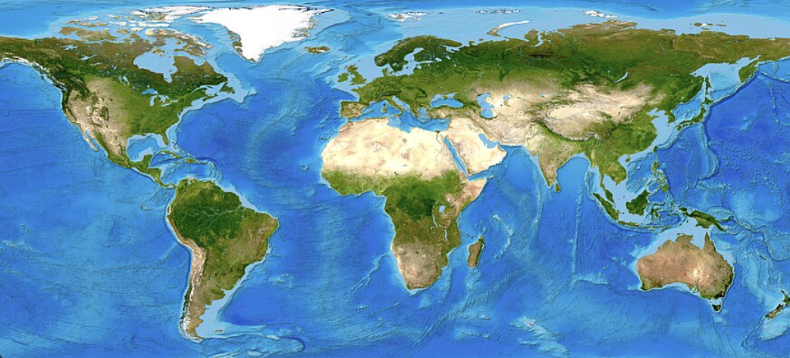

Future

World Map From Wikimedia Commons.
- In the future, I hope to become a Vet. I would like to attend UC Davis vet school and eventually open a Vet Clinic with easy access for all people and animals. I would also like to support rescue animals and work towards preventing animal abuse and abandonment.
- Additionally, I plan to major in Biology and study abroad in a Spanish- speaking country for some time.
- I am open to ending up living pretty much anywhere, but would like several experiences living in different cities, states, and countries as the opportunities arise.
- Hopefully, my computer science background and classes will help me to find a job I enjoy and assists me when using technology, as well as staying safe while doing so.